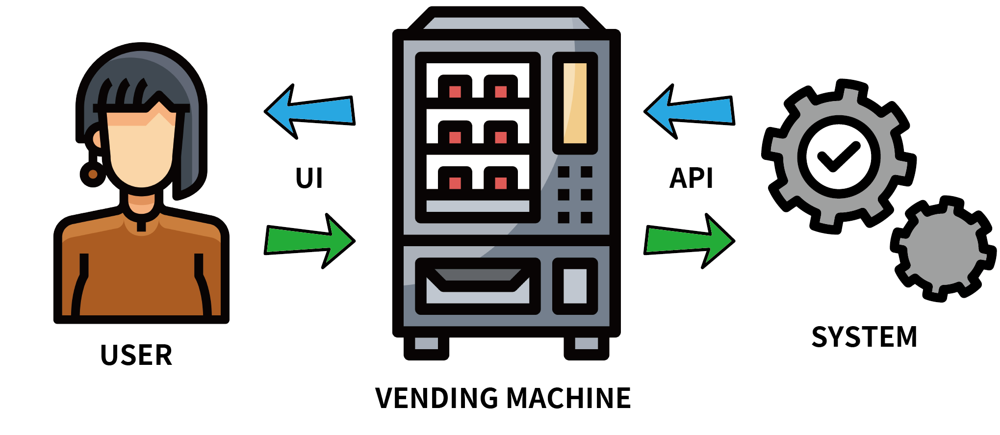

相信在找網路相關工作的人，不管是前端網頁工程師或APP工程師，當然後端工程師就不用講，一定聽過「API」。但是我想很多初次接觸的人一定會抱著三大問題：
- 什麼是API？什麼又是RESTful API？
- API怎麼做
- API要怎麼串接
這篇文章就先來說明前2個問題吧，Let’s Go!
什麼是API？什麼又是RESTful API
查維基百科可以知道，API全名是Application Programming Interface，中文叫應用程式介面。我覺得這裡可以跟UI做一個比較：
| 中文 | 英文 | 定義 |
|---|---|---|
| 應用程式介面 | Application Programming Interface | 是一種計算介面，它定義多個軟體中介之間的互動 |
| 使用者介面 | User Interface | 是系統和使用者之間進行互動和資訊交換的媒介 |
可以發現兩個英文都是Interface，中文可以翻譯介面、接口、端口，總之就是一個互動性的中介，不過可以看到一個對口是應用程式，一個則是對使用者。拿飲料自動販賣機來舉例：

藍色箭頭：系統用API告訴機器各個產品的價位跟存貨狀態，機器再用好看的UI告訴消費者這些資訊。
綠色箭頭：而當消費者選好飲料時按下UI的按鈕，機器會再用API告訴系統該吐什麼產品出來給消費者，消費者就得到了他想要的產品了。
所以API是什麼東西大家應該都清楚了，概念就是這麼簡單。那什麼又是RESTful API呢？
它其實是一個Roy Thomas Fielding博士在2000年提出的一種全球資訊網軟體架構風格，全名Representational State Transfer（簡稱REST），其實不用太擔心這個看似複雜的詞，它只是定義你API應該要長怎樣，當然它有一些規則需要遵從，不過這邊我們只要知道現今的API幾乎都是RESTful API就好了。
進入正題，API怎麼做
首先，來說說工具吧！
- 編輯器：VSCode
- 後端：Node.js、Express.js
- 資料測試：Postman
前端工具要等到串接API的時候才會用到，到時候再列出來！
Node版本：v14.17.3
網路上有很多下載教學了，這邊要說明一下以下的教學要下載至少
Node.js >= v13的版本，
這個版本中只要在package.json中加入{ "type": "module" }就可以使用import和export語法，例如：import express from 'express';。否則就要用原本的引入方法：const express = require('express')
建置環境
以下教學會從零到有建置，當然也有另一個快速的方法，就是使用Express generator來快速建立起應用程式架構，這個就不說了網路查都有很多教學。那就讓我們重頭開始吧。
先在專案資料夾用Terminal輸入以下程式碼來初始化專案
1 | npm init -y |
或
1 | yarn init -y |
其實輸入npm init就會初始化，但是會有很多選項要選，-y就是自動幫你選yes的意思。之後會產生一個package.json檔，這會記錄這個專案所使用的所有套件（名稱、版本），當有其他人要一起維護或開發專案時，做為套件傳遞使用，他們只要擁有這個檔案直接執行npm install或yarn install就會幫忙把所有套件裝回來以節省傳輸專案的速度和雲端空間。另外在安裝套件後會同時新增一個package-lock.json或yarn-lock.json，這是因為套件會有更新版，而每次下載都會自動下載最新的，有時候新舊版本會有相容性的問題，才會用這個lock檔讓別人下載時也會得到相同版本。
這裡補充一下，使用npm或yarn都可以，但是不要混用，會造成設定檔重複，有時候會報錯。至於要用哪個，可以網路搜尋兩個的差異再決定。
來看一下package.json檔（用npm init和用yarn init可能會稍微不一樣但是沒關係）
1 | { |
可以看到index.js就是程式的進入點，所以我們在專案資料夾下直接建立一個index.js
-Tree
1 | ┌── index.js |
接著安裝Express套件，Terminal輸入：
1 | npm install --save express |
或
1 | yarn add express |
其實直接輸入
npm install express就可以了，--save是將套件保存至Dependencies，但是npm5以後就已經預設會自動加入Dependencies了。
1 | { |
這邊可以看到express已被加入package.json內的dependencies，後面標註版本是v4.17.1，之後如果有再安裝套件會像這樣被加入package.json檔，就不會再贅述了。
另外前面提到待會要用的import和export方法要在package.json檔內加入{ "type": "module" }檔，就讓我們加入吧！
1 | { |
環境設置的部分就到這裡告一段落，接著就是Coding的部分了！
Express解析
因為我們將用到Express，所以最好對這軟體有些初步了解，首先我們來看一下官方文件說Express可以做什麼，官網手冊裡可以明確看到路由、中介軟體、Proxy這幾個關鍵字。
- 路由（Routing）是指根據路徑和HTTP請求方法（CRUD）設定要執行哪些函式，函式可以一個也可以多個。
CRUD是指資料處理中會用到的動作行為，分別代表Create、Read、Update、Delete，也就是中文的增刪查改。而HTTP請求方法
METHOD()最常見的有：
Create的post
Read的get
Update的put和patch
Delete的delete
創造一個最簡單的路由：
1 | const express = require('express') |
這個路由代表在根目錄（/）的時候如果請求get會得到一個’Hello world!’的回應。
- 中介軟體（middleware）是指從請求經由路由到響應的過程中，用來完成特定任務的函式。例如檢查用戶有無權限或者是否已登入等等。
中介軟體一樣是可以接收request跟response物件的函式，中介軟體可以對req和res物件進行變更，也可以決定req和res是否在此結束或者繼續傳遞至下一個中介軟體，當選擇繼續傳遞時要使用next()，用法主要有兩種：
舉例1：使用use()
1 | const express = require('express') |
首先在剛剛的路由前面加上一個中介軟體，這段程式代表每當應用程式收到要求時，它會在Terminal印出’LOGGED’。
說一下，中介軟體的函式一樣可以先定義再引入，剛剛的程式碼也可以寫成：
1 | const express = require('express') |
另外中介軟體的載入順序很重要，一樣是由上到下先載入的中介軟體會先執行。如果今天上述app.use(logger)在根路徑以後才載入，就永遠不會執行，因為根路徑的路由處理程式會終止要求/回應循環。
舉例2：中介軟體堆疊
1 | const express = require('express') |
這段程式代表在根目錄（/）請求get時會先在中介軟體中判斷是否有授權（auth = token），如果有就執行路由回傳’hello world!’，沒有的話則回傳’You are not authenticated’並結束循環。
補充一下，中介軟體還有一個用法，首先看下列程式碼：
1 | const express = require('express') |
這邊當我們針對根目錄的GET要求，定義了兩個路由，只有前者會執行，雖然第二個路由是沒問題的，但是要求/回應循環會在第一個路由結束就停止。這時候可以利用中介軟體呼叫next('route')來跳過堆疊中的其餘中介軟體，並將控制權傳給下一個路由。直接看修改：
1 | const express = require('express') |
最後是錯誤處理用的中介軟體，基本上跟中介軟體一樣，不過多了一個引數：
1 | app.use(function(err, req, res, next) { |
補充這邊舉例的
app.METHOD()只有用到GET，但是其實方法就像前面CRUD提到的當然不只一種，例如：app.get()、app.post()、app.put()、app.patch()、app.delete()、……等等。還有app.all()代表該路徑的所有請求方法都可以匹配，會蓋過get、post、delete等方法。
app.all()跟app.use()的差異如下（詳見本網頁）：
1 | app.all('/product', handler) |
基本上Express還有許多功能，可以參閱官方文件，不過以我們這篇專案會用到的觀念都介紹得差不多。接下來就繼續實作吧！
開始Coding：打造API的進入點
在根目錄的index.js：
1 | import express from 'express' |
備註：
- 通常在JavaScript會用全大寫的參數來代表這個值是固定不變的，前端常用的PORT是3000，而後端常用的PORT是5000，當然也可以設定為任意數，只要留意有些程式會有預設PORT，例如網頁的80、FTP的21、MySQL的3306等等，不要重複以免佔用。
- 這句代表我們引入express的資料會用json的形式表示，這裡以前是須要引入body-parser的，例
bodyParser.json()，不過後來Express把bodyParser套件給包進去。 - 這句代表在應用程式執行的時候，會在埠5000接聽連線，並且在Terminal印出
Server is running at http://localhost:5000。
接著只要執行
1 | node index.js |
然後在瀏覽器中載入http://localhost:5000/就可以看到應用程式對指向根URL（/)，以「Hello World!」回應。
因為文長的關係，下一篇再繼續囉！